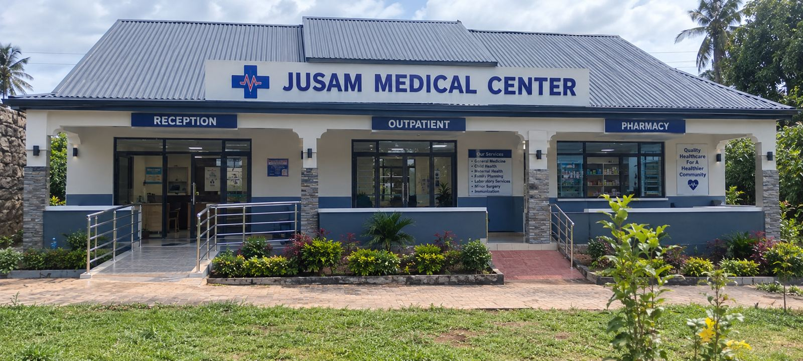

Hospital near Shimoni Road, Ramisi
Jusam Medical Clinic is in Ramisi Ward, Kwale County. Use the map, or call or WhatsApp us and we will guide you from wherever you are.
- Registered Level 2 facility, MFL 34670
- Laboratory and pharmacy on site
- Serving Ramisi Ward
How to reach Jusam
Three easy ways to find the clinic.
Use the map
Tap Get Directions below to open Google Maps with the clinic's location.
Call or WhatsApp
Call +254 707 383616 and we will give you directions from your location.
Can't travel?
Our nurse visits patients at home in Ramisi Ward for wound dressing, catheter changes and chronic illness monitoring.
Good to know
Bring previous prescriptions, clinic cards or test results, and a list of the medicines you take.
Care for the whole family, in Ramisi Ward
Everything below is available at the clinic. Message us if you are unsure whether we can help.
General outpatient care
Consultations, examination and treatment for common and acute illnesses.
On-site laboratory
Malaria and typhoid screening, haemoglobin, blood glucose, urine tests and microscopy.
Pharmacy
Collect prescribed medicines on the same visit.
Maternity and antenatal care
Pregnancy monitoring, nutrition guidance and health education.
Child health and immunization
Check-ups and routine immunization. Ask which vaccines are available on the day.
Home-based care
Wound dressing, catheter changes and chronic illness monitoring at home.
Hospital in Ramisi Ward: common questions
Don't see your question? Ask us on WhatsApp any time.
Where exactly is Jusam Medical Clinic?
In Ramisi Ward, Kwale County, Kenya. Use Get Directions on this page or call +254 707 383616.
Do I need an appointment?
No, walk-ins are welcome during opening hours. You can also book on WhatsApp.
Do you do home visits?
Yes, for patients in Ramisi Ward who can't travel. Message us on WhatsApp to request one.
What are the opening hours?
Monday to Saturday, 8:00 AM to 6:00 PM. Closed on Sundays. For serious emergencies, go to the nearest hospital or call 999 or 112.
Visit us in Ramisi Ward
Ramisi Ward, Kwale County, Kenya. MFL code 34670.
Emergency? Go to the nearest hospital or call 999 or 112. Don't wait for a WhatsApp reply.
Find the care you need
Other pages from Jusam Medical Clinic.
Your health deserves a place close to home
Book a visit, ask a question or arrange care at home. Open Monday to Saturday, 8:00 AM to 6:00 PM.